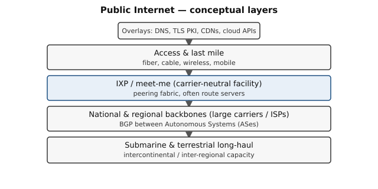
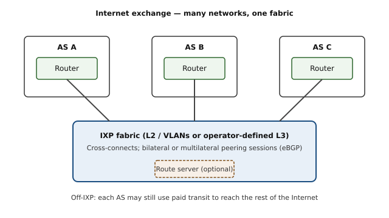
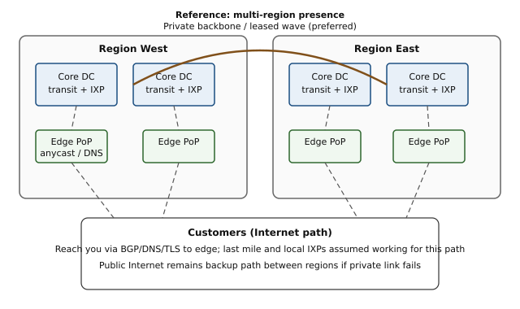
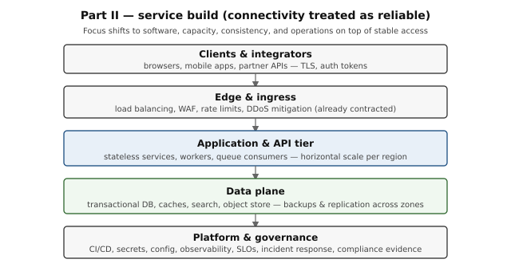

1. 本文结构
第一部分 — 连通性基础
第 2–6 节说明全球互联网、IXP/NAP、法律考量、如何建设合规的运营商底层网络，以及多区域参考拓扑。它们在此的作用是为第二部分打底：让读者明白「可靠连通」之下是什么、即便报文按预期流动时仍有哪些依赖。技术章节用于建立心智模型；法律材料面向实际跨境建设（须咨询专业律师）提供方向，而非给仅需第二部分服务设计视角的读者增加负担。
第二部分 — 接入可靠时的服务建设
第 7 节改变工作假设：主要接入路径、IXP 与转接（transit）在规划期内按设计工作。问题转为在该底层之上的软件架构、容量、一致性、安全与运维——而非争论报文能否出楼。
| 2 |
全球互联网是什么（AS 联邦、分层） |
| 3 |
IXP 与 NAP（对等互联、交换结构、治理） |
| 4 |
法律与合规考量 |
| 5 |
建设运营商底层网络 |
| 6 |
多区域参考拓扑 |
| 7 |
假定连通可靠时的服务建设 |
| 8–9 |
诚实边界；延伸阅读 |
目标（第一部分）。 理解全球连通分层；理解 IXP 与历史上的 NAP 如何运作；推理第三方依赖；勾勒可靠、合法的运营商基础设施的参考做法。
威胁模型（第一部分）。 对手可能类似在供应商（转接、托管、DNS、TLS、云、支付）上拥有经济与法律杠杆的大国。本文排除军事打击摧毁站点，并假定机房电力稳定；不假定可免于法院命令、制裁或许可要求。
2. 全球互联网是什么
公网并非单一网络，而是自主运营网络的联邦（自治系统，AS），通过 BGP（边界网关协议）、共用编号（IPv4/IPv6）以及通用应用约定（如 DNS、TLS）交换流量。

图 1 — 概念分层：长途链路与骨干支撑交换点与接入；DNS、PKI 与 CDN 等作为叠加层位于其上。
| 海缆与陆缆长途 |
大洲与区域之间的大容量链路；常由运营商与大型机构自有或长期租用。 |
| 国家与区域骨干 |
大型 ISP 与运营商汇聚企业与接入流量。 |
| 互联网交换点（IXP） |
多网互联的物理汇聚点，常通过互不结算或双边对等互联，降低相互流量的转接成本。 |
| 接入与最后一公里 |
光纤、电缆、无线、移动 RAN 等。 |
| 叠加服务 |
DNS、CDN、云、电子邮件——建于上述分层之上。 |
运维要点。 端到端可靠性通常来自路径多样性、合同冗余、成熟运维（监控、变更控制、事件响应）以及对关键依赖的理解：路由、命名、证书、时间与软件供应链。
3. IXP 与 NAP
NAP（网络接入点）主要是 1990 年代互联网商业化时期美国的历史术语。现代对应物通常是 IXP 或运营商中立的 meet-me 设施，供各网络互联。

图 2 — 多网将路由器端口接到共享IXP 交换结构；路由服务器（route server）可简化多边对等。结构外的转接（transit）仍可达互联网其余部分。
3.1 经济模式
- 在 IXP 对等互联。 两个或多个网络交换发往对方客户（或下游）的流量；当流量与策略匹配时，常不按兆比特结算（「互不结算对等」）。
- 转接（Transit）。 客户向上游付费以获得大范围或全网可达性；较小网络与许多企业依赖转接实现全球可达。
- 路由服务器。 许多 IXP 托管路由服务器以简化多边对等；各参与方仍自行应用入/出向策略。
3.2 物理部署与治理
- IXP 通常位于运营商中立数据中心，具备交叉连接、meet-me 机房与共享交换结构（以太网 VLAN 或更复杂的 L2/L3 VPN 设计，视交换点而定）。
- 治理可为非营利（会员协会）或商业形态；规则涵盖配额、过滤预期、滥用处理与技术最低要求。
- 公网上的路由安全是社区共建：IRR 记录、RPKI ROA、前缀过滤以及 MANRS（路由安全共同规范）等倡议描述运营商最佳实践——须始终符合当地法规与对等协议。
IXP 不能消除什么。 它们降低符合条件流量的成本与延迟；并不能消除对转接以实现全球可达、对许多应用所依赖的DNS 与证书生态、以及对各地设施所有者与监管机构的法律与商业关系的依赖。
4. 法律与合规考量
本节在实际运营跨境网络或设施容量时最相关。若读第一部分主要为理解第二部分，可将下表视为运营商为何不能把底层当作法外之地的说明——而非你必须亲自执行的清单。
跨境扩展基础设施时，应明确规划：
| 许可与电信规则 |
提供网络服务、使用频谱或运营特定设备可能需要许可或登记。 |
| 数据保护与留存 |
客户与流量元数据可能受隐私法、留存限制与合法调取制度约束。 |
| 制裁与出口管制 |
硬件、软件、密码学与服务可能因来源、目的地或最终用户类别受限。 |
| 合法请求 |
传票、法院命令与国家安全框架可能要求披露或采取行动；应在专业律师指导下形成书面政策。 |
| 内容与接入政策 |
屏蔽、过滤或承载特定流量在各地可能被要求或禁止；产品设计应与律师对齐。 |
技术韧性与法律合规相辅相成：司法辖区多样性的实体与合同可降低关联失效，但各实体仍须在其所在地合法运营。
5. 建设运营商底层网络
从依赖类别与合法替代方案思考：在供应商承压或失败时，哪些可以多样化、自有或迁移？本节即第二部分假定对应用层工程决策「足够好」的底层（underlay）。
5.1 路由与连通性
- 通过 RIR 政策取得并妥善记录 ASN 与地址空间；在已部署处发布一致的 RPKI ROA。
- 在合同与法规允许时使用多家独立转接商与多样化物理路径（海缆系统、国家）。
- 在能降本降延且不致形成单一不可替代瓶颈处考虑 IXP 对等。
- 多区域服务可考虑 anycast 或地理感知 DNS，同时理解 BGP 仍是愿意对等各方之间的策略驱动系统。
5.2 命名与信任锚
- 在你可控的基础设施上运行权威 DNS；注册商与顶级域策略须与法律及业务连续性计划一致。
- 公共 WebPKI 依赖浏览器与 CA 政策；企业或客户托管客户端在适当且合法时可使用私有 PKI。设计应兼顾透明度与密钥连续性，并经安全评审。
5.3 「自包含」软件与运维
- 明确界定在分区或失去全球互联网时的行为（什么降级、什么仍可用）。
- 提供多个引导端点与有文档的更新通道；按威胁模型与法律义务对制品签名并校验完整性。
- 尽量减少协议或 API 关键路径上不必要的第三方依赖。
5.4 非地面路径
低轨卫星可在地面链路脆弱处增加路径多样性。约束包括容量、延迟、天气、终端成本、出口管制，以及与仍受法律压力的第三方运营商之间的商业条款。
6. 多区域参考拓扑
运营商级服务的实用模式：至少两个区域，每区有多座设施与多条转接关系，在明显有利于成本与延迟处有 IXP 接入，在可负担时有区域间优选私有路径，以及面向客户的边缘 PoP（anycast、DNS 或二者兼有）。可观测性应覆盖前缀的 BGP 可见性、RPKI/IRR 一致性以及 DNS 健康。

图 3 — 多区域核心（转接 + IXP）、面向客户的边缘，以及区域间私有骨干，公网作为备份。
7. 假定连通可靠时的服务建设
工作假设。 针对本节产品与平台决策，将最后一公里、IXP、转接以及你自身的 BGP/DNS 配置视为在规划窗口内足够可靠：中断短暂、有界，并由现有供应商 SLA 与冗余处理——而非长期结构性故障。你仍须为区域或可用区损失（机房火灾、误配置、厂商缺陷）设计，但不必把主要精力放在「报文能否到达 IXP？」上。

图 4 — 第二部分焦点：客户端、入口、应用与数据层，以及（假定稳定的）网络底层之下的平台/治理。
7.1 容量与入口
- 流量与连接规划： 建模峰值 RPS、并发连接、上下行不对称与大负载端点（如证明、快照）。据此确定负载均衡与 WAF 规模；保留突发余量。
- 边缘合同： DDoS 缓解与 CDN 多为商业服务——为供应商事故编写 runbook，在法规与预算允许时保留备用厂商路径。
- API 设计： 在边缘尽量采用无状态请求处理；仅在数据模型需要时使用会话亲和。
7.2 应用层
- 水平扩展： 将应用实例作为经健康检查的池后的牲畜（cattle）运行；按 CPU、延迟与队列深度扩展——不仅看平均负载。
- 异步工作： 将长任务卸载到队列与工作进程；定义超时、幂等键与死信处理，使部分失败不致破坏账本或计费状态。
- 配置： 集中管理功能开关与配置并保留审计变更历史；将二进制发布与行为 rollout分离。
7.3 数据面与一致性
- 按用例选择一致性： 金融或共识关键状态用强一致；仅在产品明确容忍滞后与对账处使用最终一致模型。
- 复制： 区域内用多可用区（或等价方案）提高可用；为灾备增加跨区复制或备份，并文档化 RPO/RTO。
- 备份与恢复： 定期演练恢复；加密备份并按隐私与合法调取政策限制访问。
7.4 安全与身份
- 认证与授权： 短生命周期凭证、轮换与人机与服务账户的最小权限；审计高风险操作。
- 密钥： 使用托管密钥库；镜像或配置库中不放长期密钥。
- 供应链： 签名构建、依赖固定版本，漏洞响应 SLA 与客户面向 SLO 对齐。
7.5 可观测性与 SRE 实践
- 黄金信号： 延迟、流量、错误、饱和度——按服务与按依赖分解。
- SLO 与错误预算： 将发布节奏与变更风险与实测可靠性挂钩；对影响用户的症状告警，而非仅基础设施 ping。
- 事件管理： 明确严重级别、沟通模板与带跟踪行动项的事后复盘。
7.6 区块链相关工作负载的说明
对镜像链上状态的验证者、中继或 API 节点等系统：
- 将共识关键路径与读多 API路径分离，避免 API 负载饿死区块传播。
- 文档化分区下的行为：哪些 API 返回错误、哪些降级为只读缓存数据，以及客户端应如何重试。
- 将对等发现与引导与 §5.3 的自包含原则对齐，同时遵守网络使用的法律约束。
8. 诚实边界
- 若客户侧 ISP 或其所在政府屏蔽或劣化你的服务，你无法保证触达每一位客户。
- 公网路由是愿意参与的各方之间的共识；强大对手可在特定地点使对等或托管在经济或法律上不可行，而无需攻击你的供电。
- 支付、应用商店、身份提供商等相邻行业构成纯「互联网管道」之外的额外依赖链。
- 第二部分对可靠接入的假设是设计上的便利；进入新市场、重大供应商变更或地缘风险显著变化时应重读第一部分。
- MANRS — 面向网络运营商的路由安全规范。
- RFC 4271 — BGP-4 规范（域间路由设计意图的背景）。
- 区域互联网注册机构（AFRINIC、APNIC、ARIN、LACNIC、RIPE NCC）— 号码资源与 RPKI 政策。
任何具体落地建设均应由具备资质的法律顾问与持证电信或频谱顾问在各目标司法辖区审阅。